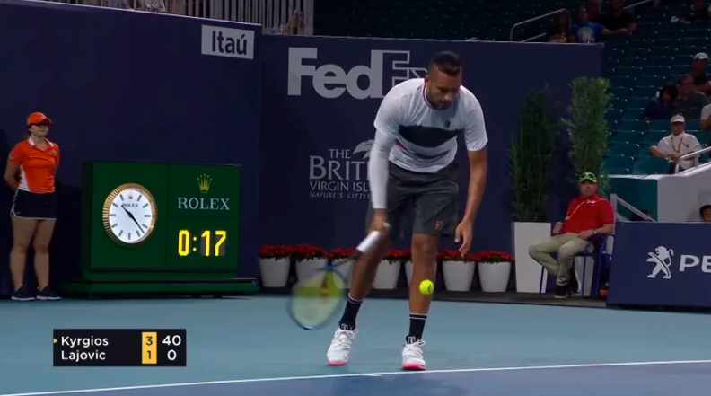

HomePage
HomePage
One of the most important shots in tennis, the serve is also one of the most complex ones. Professional players base their whole game around their serves, while beginners dread it every time they begin to serve. The complexity of the tennis shot makes it a very interesting shot to learn, but it can be quite difficult to do so. If you are just starting to learn tennis, you will find this article extremely useful. We have broken down all the rules and technique tips we believe will help you.
If you have any further questions, let us know and we will answer them. Otherwise, enjoy your reading!
This is what you will find on this page:
In tennis, a serve (also known as service) is defined as the shot players hit to start every point. At any point during a tennis match, only one of the players is considered to be the server. The serve is usually a shot in which a player tosses the ball above their head and hits it while it’s still in the air.
However, a few players choose to use underarm serves (see more below) occasionally — which is also allowed. For the majority of professional tennis players, their serve is considered their main weapon.
The serve is considered one of the most difficult shots for beginning tennis players. Besides the difficulty of the stroke itself, one of the most puzzling aspects of the serve is all the rules it is subject to. If you are a beginner, you might be concerned about just trying to hit the ball without hurting yourself, and following the proper rules might not even be on your mind.
However, if you ever plan on playing a tennis tournament, you will need to know all the rules that apply to tennis serves. Below, we will try to cover all the rules you need to know in the simplest way possible, so after reading this your only concern will be how to improve your serve.
The first step before the match starts is to decide who serves first. This is usually done by either tossing a coin or by spinning a racquet. In professional matches, the standard is to use a coin. In club matches, players usually spin a racquet.
The way that is done is player A covers the bottom of a racquet’s grip and begins spinning it. Player B chooses either “big line up” or “big line down” (if the racquet is a Babolat), or “M” or “W” (if the racquet is a Wilson). Player B then tells player A when to stop spinning, and the outcome of the spin will determine who wins it.
The winner, then, can choose one out of 4 options:
The loser of the spin gets to make the next choice. If player A chose to begin serving, for instance, player B gets to choose which side of the court he wants. If player A chose to defer the choice, player B gets to choose either the side of the court or to begin serving/receiving. Once these choices are made, the players are ready to start the match.
One of the most common questions related to serves is where to stand. The rules are actually quite simple. If you look at the picture below, you will see that there are 2 main lines on the court you should pay attention to. The first one is the baseline (in red), and you should make sure you are standing behind it every time you are about to serve. If any of your feet touch this line before you hit the ball during a serve, it will be considered a foot fault. If that happens, that serve will be counted as an error. You are, however, allowed to land inside the court after you hit your serve.
The second line you should pay attention to is the center mark. This line draws an imaginary line across the court, and its only use is during the serve. A player who is serving will always stand either to the right or the left of the center mark (depending on the point), and he will try to hit the serve inside the service box located diagonally to him.
Every time a new game begins, the player who is serving starts at the right side of the center mark. He will then try to hit the service box located to his left (highlighted in green below). The player who is receiving will attempt to hit the ball back over the net, and the point will be on.
When the point is over, the player on serve will then stand to the left side of the center mark. He or she will then attempt to hit the service box to his right. Players will then alternate sides every point until the game is over. In order to make it simpler, a player will stand to the right of the center mark during odd points (1st, 3rd, 5th, etc) and to the left during even points (2nd, 4th, 6th, etc).
The tennis serve is one of the most difficult shots for beginners to learn. The reason behind it is that it requires the coordination of several different movements, all involving different parts of the body. A serve starts with the proper positioning of the player’s feet, combined with the right grip of the racquet. It is followed by a uniform toss of the ball with the left hand while the right hand lifts the racquet in a semi-circular movement. Once that movement is done, the player needs to bend his knees and jump, while rotating his shoulders and pronating his wrist.
If it is difficult to even describe the tennis serve as a whole, imagine actually executing it. Several beginner players try to just copy what they see on TV, and end up developing the wrong technique due to the complexity of the serve movement. And once you develop the wrong technique, it can be hard to change it due to muscle memory.
It is extremely important to develop a good serving technique as you begin playing tennis. If you feel like you currently don’t have a good technique, there’s no need to panic though. With some purposeful practicing, you can certainly develop a great serve. The best way to learn the correct serve technique is to break it down into smaller steps, which when combined form a progression. By doing so, both beginner and advanced players can understand their own serves better and focus on the parts they need to improve.
In order to learn how to serve in tennis, you will need to learn the following steps:
The way you position your feet before serving is absolutely vital for a good serve. Beginners usually have a tendency to point their feet to the other side of the court, but that is not the right way to position yourself. The proper stance when serving is to point your front foot to the net post, and keep your back foot parallel to the baseline. If you’re right-handed, you should point your front foot to the right net post, and if you’re left-handed, you’ll point your front foot to the left post.
When you’re learning how to serve, one of the most confusing aspects of it is how to hold the racquet. The best serve grip is the continental grip, and it is by far the most used by players across all levels. When finding a continental grip, the first step is to hold the grip at the base of the racquet. You shouldn’t hold the racquet in the middle of the grip, as that will limit your motion significantly. Then, you should rotate the grip until the little “cushion” between your thumb and your index finger is aligned with the side of the racquet (just like the picture above).
A good toss is key to a powerful serve. You might have an amazing technique, strong legs, and a fast arm, and yet if your toss is poor your serve won’t be effective.
When you’re training your toss, it’s important to focus on consistency. In order to do so, it’s very important to have the right technique. You start by holding the ball with your non-dominant hand, between your thumb and the other 3 or 4 fingers. The ball should be slightly separated from the palm of your hand (like the picture above).
Your arm should be in line with your front leg. Notice that the toss and the backswing should happen at the same time, so it’s important to time everything properly. As you lift your arm holding the ball, you should release the ball by the time your arm reaches your eye-level. Continue lifting your arm until you reach the “trophy position.”
The backswing portion of the serve is the step that varies the most between players. There are several ways the backswing can be executed, so you should aim for something that works for you. The general rule is that the simpler the better.
You will do a semi-circle movement with your arm holding the racquet, and stop once you reach the “trophy position”. The bottom of your racquet should be almost touching the back of your head. Finally, both arms should be aligned.
Your jump is actually one of the most important parts of your serve. Once you reach the “trophy position”, both of your knees should be slightly bent. Also, most of your weight should be on your front leg – which will propel you to jump forwards.
You should jump with both legs, towards a 45 degree direction (up AND forwards). You should land on your front leg, and that leg should land inside the court.
While you jump, the shoulder rotation step should happen as well. These steps should be synchronized, so you don’t waste any of the energy you have built throughout the movement. It is extremely important that you maintain your body relaxed throughout this step, otherwise you will not hit the serve as fast as you can.
The rotation will come from your shoulder, core, and hips. Essentially what you’re trying to do is to bring your back hip and shoulder in line with your front hip and shoulder. By the time this step is done, your arm holding the racquet should be about to make contact with the ball.
Finally, it is time to hit the ball. Your wrist should be firm yet relaxed. This step is what will dictate whether you hit a kick, slice, or flat serve. You will “snap” your wrist as your racquet hits the ball and then follow through with your arm.
A powerful and effective serve can be a very important aspect of your game, regardless of the level you are playing. It is the one shot in which you have total control of how you hit it, and – if executed correctly – can put your opponent in a lot of trouble. Once you learn the basic techniques mentioned above, you will be able to add different spins and directions to your serve, which means that your opponents will have a harder time returning those serves. Below we will cover the major different types of serves that you will eventually master.
Adding different spins to a serve will change the direction and height of the ball after it bounces. Players serve with different spins in order to make their opponents’ lives more difficult, since it makes it harder for them to identify where the serve is coming. There are 3 different spins used by players: kick, flat, and slice.
A Kick Serve happens when a player hits the ball with topspin, which normally causes the ball to bounce higher than it would otherwise. Kick serves are generally used in slower and bouncier court surfaces (clay, har-thru, or slow hard courts), as these courts maximize the effect of such serves, making them more difficult for returners. An effective kick serve will make the ball bounce higher than the returner’s shoulder line, making it difficult to attack the serve. Normally kick serves are used during the second serve, since the added spin reduces the overall speed of the serve.
So how do you hit a kick serve in tennis? In order to do so, your racquet needs to hit the ball on your non-dominant side (left side for right-handed, right side for left-handed) and then brush the ball from above. This movement will make the ball rotate forward, which will cause it to bounce higher.
While it can be counterintuitive at first, you should feel like you’re hitting the ball upwards. You will then use your wrist rotation in order to “cover” the ball, which will make the ball come down after it has cleared the net. The picture below shows where your contact point for a kick serve should be, and how the ball will rotate afterward.
As you can imagine, a flat serve means that it does not have any spin added to it. It is normally the first serve you will learn when being introduced to tennis, as it is the simplest of the 3 serve variations. The benefit of hitting a flat serve is that the ball will reach the maximum possible speed, decreasing the reaction time of the receiver. The fastest serves hit by professional players are usually flat serves, and can easily reach speeds of 130 mph. The drawback of the flat serve, on the other hand, is that the ball will not change direction after it bounces. If the returner can predict where you will hit a flat serve, it will be fairly easy to return it. Therefore, if you do not have a fast serve, a flat serve will be less effective than a kick or slice serve.
How can you hit a flat serve in tennis? Since you are not using any spin generated by your wrist, all you have to do is hit a normal serve. The contact point between the racquet and the ball will dictate where the ball will land. Generally, you should attempt to hit the ball somewhere close to the middle, as you can see in the picture below.
A slice serve is known to be the opposite of a kick serve. Such spin makes the ball stay close to the ground and bounce leftwards for right-handed servers (and rightwards for left-handed ones). Slice serves are used on all surfaces, but are specially effective on courts that already tend to keep the ball low (like grass or indoor courts). Slice serves are also very effective for doubles matches, as they force the returner to hit the ball upwards, allowing the player at the net to hit an easier volley.
How can you hit slice serves in a tennis match? In order to be effective, your racquet should hit the ball on your dominant side (right for right-handed, left for left-handed), and then brush it horizontally. By doing so, the ball will move left after it bounces (move right for left-handers). The picture below shows the ideal contact point for a slice serve and the normal trajectory of the ball (for a right-handed serve).
While the ball contact point will be different for right and left-handers, the different directions of the serves have nothing to do with a player’s dominant hand. A wide serve will be the same regardless of which one is your dominant hand or which spin you add to the ball.
Players choose to change the direction of their serves because it might allow them to explore a strength in their own game or a weakness in their opponent’s game. If your opponent has a weak backhand, you can use your serve to take advantage of that. If you have a good forehand, you can use wide serves to open up the court and get shorter balls in your forehand. There are several different possibilities you can explore, and you can start the process by learning what each serve means.
Wide serves are aimed towards the outer extremes of the service box, as you can see in the picture above. If you are serving from the right side of the court (deuce side), a wide serve will hit the left side of the left service box. If you are serving from the left side (ad side), a wide serve will hit the right side of the right service box. Wide serves are great to open up the court since it will force your opponent to hit it outside of the singles court (X marks above). You will then have the whole court open to hit the second shot.
The drawbacks of wide serves is that they give your opponent a great degree of angle. If she serve is not effective, your opponent will be able to hit an aggressive shot either crosscourt or down-the-line.
Body serves are literally aimed at the receiver’s body. By hitting an effective body serve, you will remove all the angles from your opponent. A well-executed body serve will be aimed towards the receiver’s hip on his or her dominant side. By doing that, the player will have a hard time hitting either a forehand or a backhand. The drawback from body serves is that it can be very difficult to hit aces.
Finally, T serves are aimed towards the inner portion of the service box. T serves are an excellent choice as they remove angles from the receiver, yet they can easily result in aces.
Underhand serves, while not frequently used, are a serve variation used by some players. When doing so, a player hits the ball as a forehand slice instead of hitting it above his head. The reason behind hitting an underhand serve is that it breaks the rhythm of the match, as the receiver is not expecting such a shot. Since the receiver is expecting a fast serve and thus waiting far behind the baseline, a short underhand serve might result in a double bounce.
Underhand serves are seen by many as unethical, or as “cheap shots”. However, they have been used more frequently by players like Nick Kyrgios.
